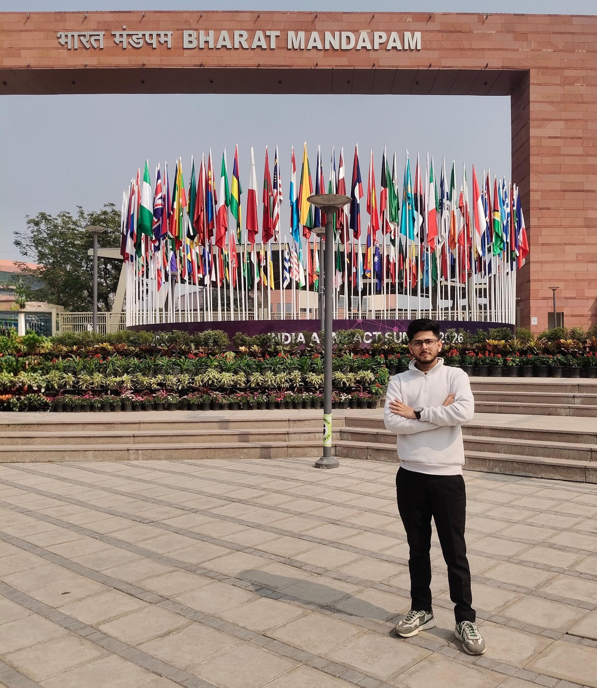

01
AI / SUPPLY CHAIN
AI-ENABLED
LOGISTICS OPTIMIZER
Exploring resource allocation and supply-chain optimization for a Smart India Hackathon problem associated with the Ministry of Steel.

PORTFOLIO / LUCKNOW, INDIA
Building at the intersection of AI, data & software.
EXPLORE MY WORKI'm an M.Tech Computer Science student at the Centre for Advanced Studies, AKTU, and a B.Tech graduate in CSE & AI. I enjoy turning ideas into useful software and exploring what data can reveal.
My work spans machine learning, full-stack development, cloud and networking—with a particular interest in practical, human-centered applications.
LET'S CONNECT ↗A selection of projects exploring intelligent systems, healthcare, networks and the web.
AI / SUPPLY CHAIN
Exploring resource allocation and supply-chain optimization for a Smart India Hackathon problem associated with the Ministry of Steel.
MACHINE LEARNING / HEALTHCARE
Machine learning classification projects exploring Parkinson's and heart disease prediction through healthcare data.
NETWORKING / SECURITY
A portable networking concept designed to connect users without cellular coverage. A Kavach 2023 finalist project.
FULL-STACK / WEB
A React and Redux application featuring Firebase authentication and Stripe webhooks.
A foundation built through study, collaboration and hands-on work.
Centre for Advanced Studies, AKTU
Era University, Lucknow
Siemens Healthineers, Lucknow
RailTel Corporation of India · InternPe
Amity University, Lucknow
Innovation Think Tank Capacity Building Program winner / Kavach Cybersecurity Hackathon finalist
OPEN TO MEANINGFUL OPPORTUNITIES
HAVE AN IDEA OR FEEDBACK?
Tell me about yourself and share your thoughts on the site.